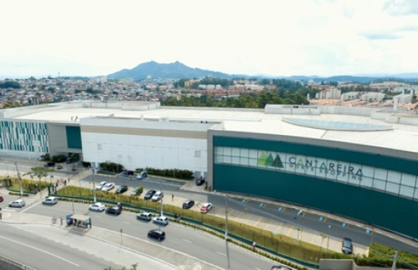
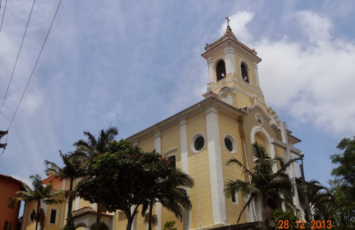
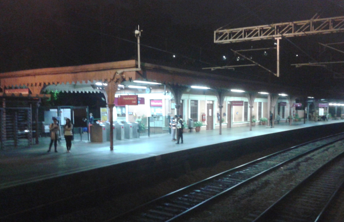
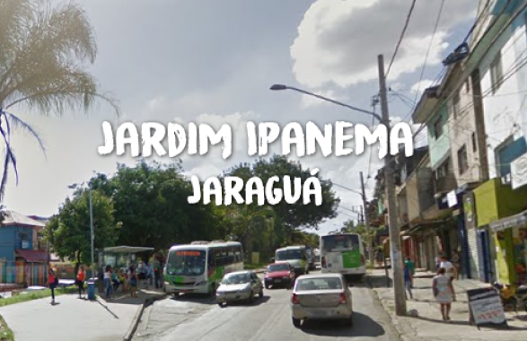

Shopping Cantareira
|  |
Com um projeto moderno e sustentável, o Cantareira Norte Shopping é um empreendimento que fortalece a região Norte de São Paulo. Pioneiro, está localizado no bairro Jardim Pirituba, e oferece um mix diversificado de lojas, lazer e entretenimento para a população, além de conforto e comodidade, o que permite uma experiência única de convivência em um ambiente diferenciado. |
Paroquia Nossa Senhora da Conceição
|  |
A Paróquia que existe desde 1950, epóca onde ocorreu o primeiro culto, é muito famosa na região deo Jaraguá, tendo missas todo Sábado e Domingo. |
Estação Jaraguá (CPTM)
|  |
A Estação Jaraguá é uma estação ferroviária, pertencente à Linha 7–Rubi da CPTM, localizada no distrito do Jaraguá no município de São Paulo, cujo esta linha, foi a primeira estrada de ferro construída em solo paulista, denominada como SPR - São Paulo Railway, ou popularmente conhecida na época como "Inglesa". |
Jardim Ipanema
|  |
O Jardim Ipanema é um bairro da zona Sul de São Paulo que fica próximo ao Jardim Três Marias, Jardim dos Lagos e Jardim Paquetá. É um bairro residencial que fica às margens da Represa Guarapiranga e conta com algumas ruas arborizadas, calmas, casas térreas e sobrados. Investir alugando ou comprando um imóvel no Jardim Ipanema pode ser uma ideia interessante para quem busca tranquilidade e qualidade de vida. |